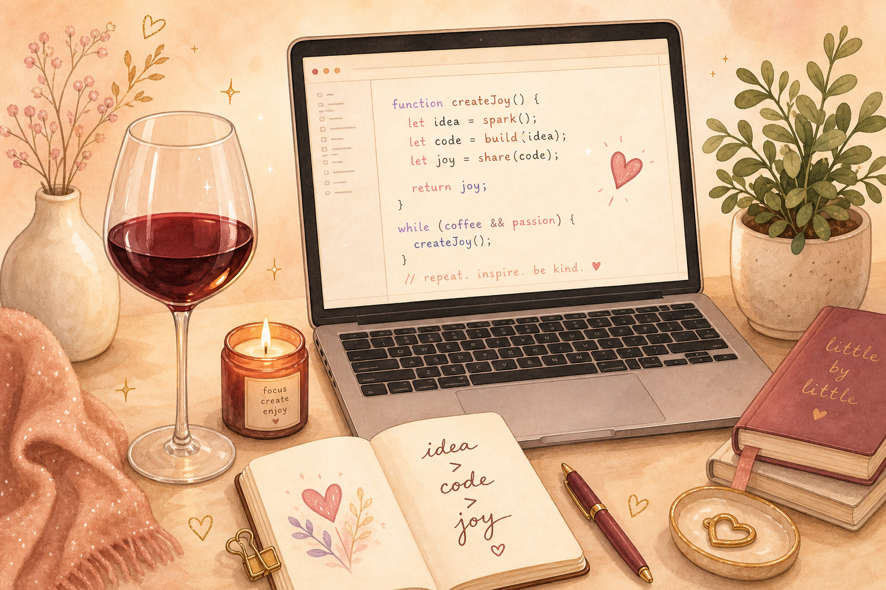

Místo, kde se sdílí projekty vytvořené z radosti, ne pro zisk. Vzdělávací apky, pomocné nástroje, hry pro děti. Cokoliv, co vzniklo v dobré náladě za pomoci vibecodingu (a třeba při skleničce vína).

Ne každý projekt musí vydělávat. Některé vznikají prostě proto, že to tvůrce baví. WineCoding je platforma, kde tyto projekty najdou reálné uživatele.
Vytvořil/a jsi něco cool při večerním codingu? Nahraj to a poděl se s ostatními. Žádné složité procesy, žádné poplatky.
Najdi vzdělávací hry pro děti, produktivní nástroje, kreativní apky. Věci, které by jinak zůstaly schované na něčím GitHubu.
Každý projekt má svůj příběh. Proč vznikl? Co autora inspirovalo? Tady nejde jen o kód, ale o lidi za ním.
Projekty všech barev a chutí, jako dobře vybavený wine bar
Třeba procvičování pravopisu, malá násobilka, anglická slovíčka…
Třeba rozpis úklidu pro děti, plánovač jídel na týden, kalendář vývozu odpadu…
Třeba generátor jmen pro postavy, omalovánky na tisk, pohádky na dobrou noc…
Třeba dechová cvičení, deník vděčnosti, hlídání pitného režimu…
Třeba rodinný kvíz, hra na dlouhou cestu autem, bingo na oslavu…
Třeba kalkulačka kapesného, převodník receptů, odpočet do prázdnin…
Každý projekt má svůj příběh
Jednou večer, když dcera usnula, jsem si nalila skleničku vína a začala přemýšlet, jak jí usnadnit učení matematiky. Do půlnoci jsem měla hotovou první verzi hry s příklady. Teď ji používá celá její třída.
Dlouhodobě spolupracuju s Filipem Dřímalkou a pohybuju se na pomezí vzdělávání, marketingu a praktického využívání AI.
WineCoding vznikl z jednoduché myšlenky: ty nejhezčí nápady často přijdou večer, když člověk tvoří jen tak: pro radost, ze zvědavosti, ne nutně pro zisk. Třeba u skleničky dobrého vína.
A protože mi chyběl prostor pro malé „navajbkóděné" projekty, které nemají ambice stát se startupem nebo velkým produktem, ale přesto můžou někomu pomoct, tak jsem ten prostor vytvořila. Ať už jste vytvořili aplikaci na učení, pomoc se školou nebo kroužkem, vývoz odpadu nebo jiné drobné vychytávky pro každodenní život. Tady je může najít a využít i někdo jiný.
Hanka ❤️
LinkedInPřidej ho na WineCoding, aby se mohl dostat k lidem, kterým pomůže nebo je pobaví. Žádné poplatky, žádné složitosti. Jen tvůj projekt a jeho příběh.
Přidat projekt